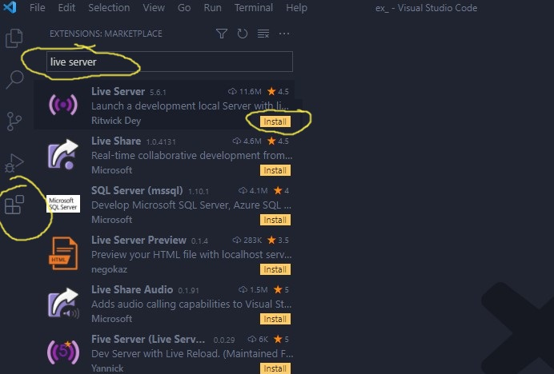
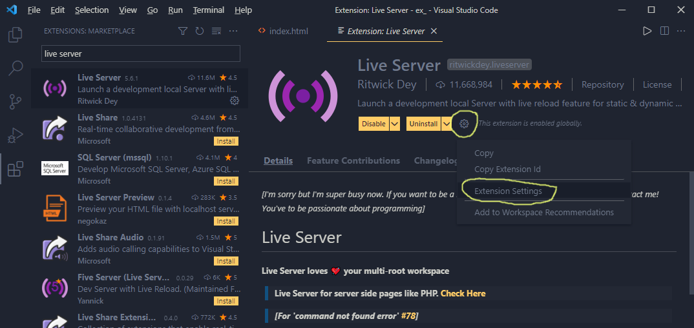
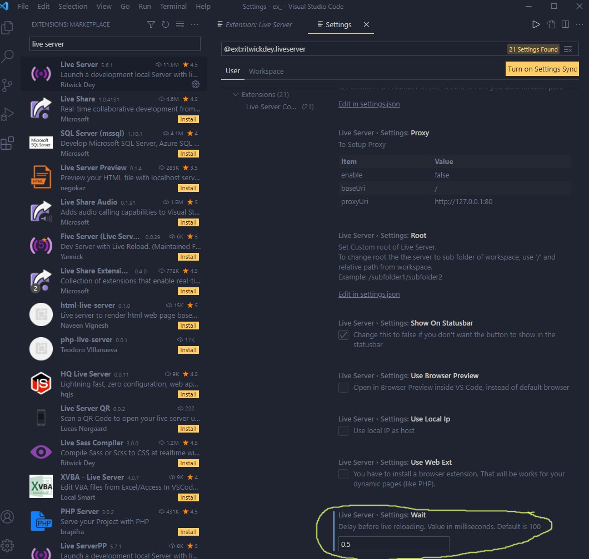
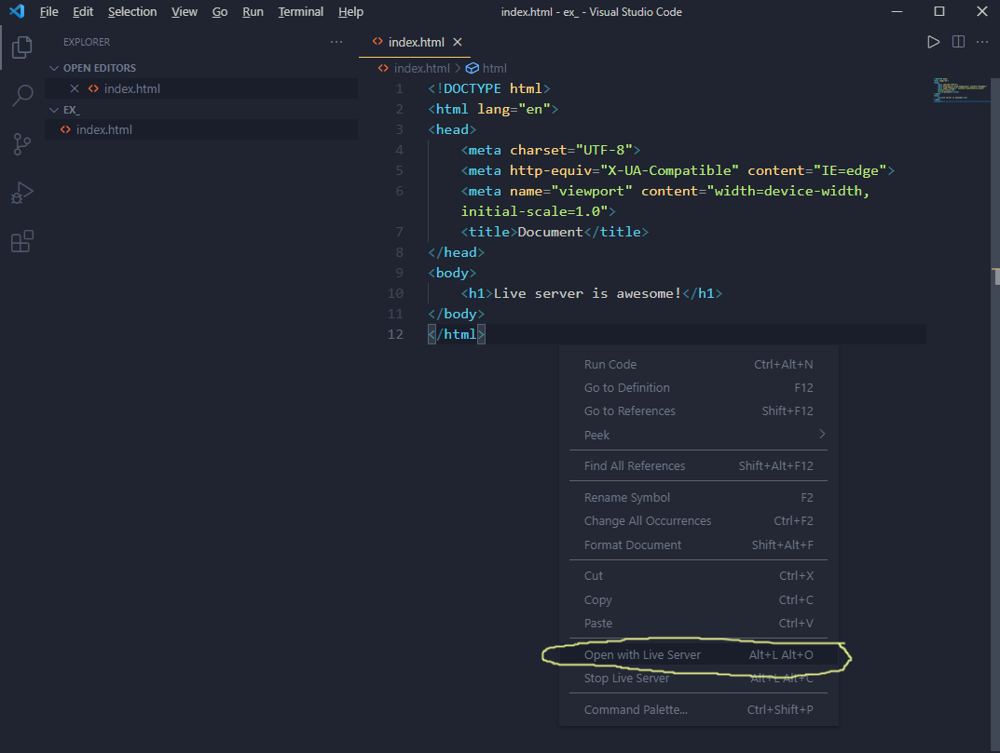
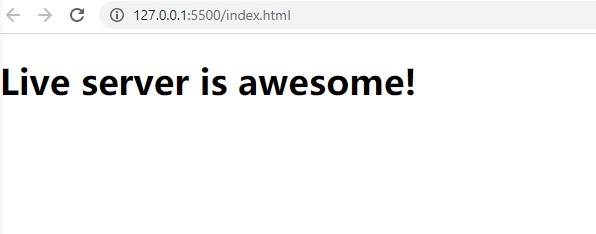

First open your bash terminal: Terminal==>New Terminal.
Then input: 'npm install http-server -g' in the bash terminal, and press enter key to run the command.
It's easy, but someone maybe struck here due to specific system configrations.
So I would like to share a useful VS code extension, which can achieve similar functions like http-server, and is even better in some aspects.
Open the extensions pannel, input 'live server' in the search bar, choose the right one, then click 'install'. Now you have the live server!
Click the setting icon, then choose the 'Extension Settings' option.
Scroll down to the 'Wait' part, this is to config the auto-refresh interval, if you want your change displayed in real time, you can change the value to 0.5 or whatever small numbers you like.
Right-click your HTML file, and choose the 'Open with Live Sever' option, then a new webpage will open in your default browser. Your changes in the HTML file will display on the webpage almost in real time.
Webpage opened in your default browser.
